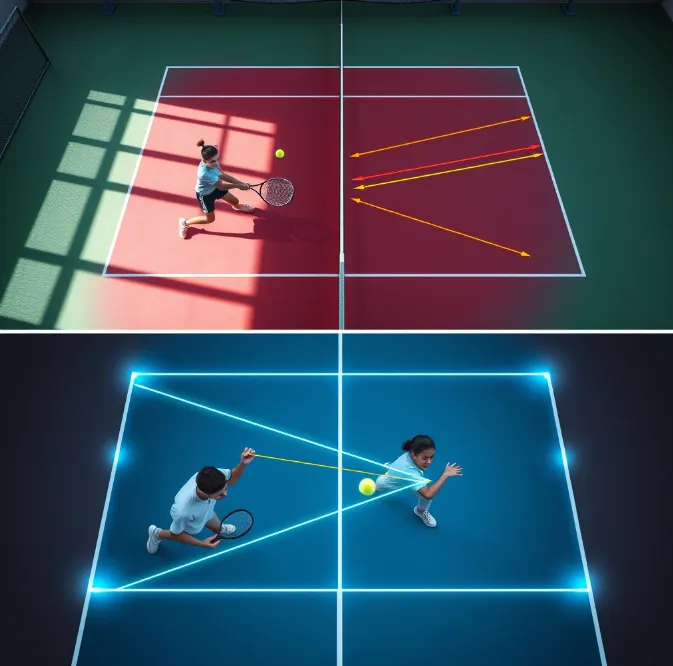

The operating system
for tennis improvement.
Video analysis, coach-ready reports, drill recommendations, player progress, and role-based dashboards — connected into one clean, purposeful flow.
No app download needed. Works on any browser, any device.
Every layer reinforces the next.
The value is not one feature — it is what happens when analysis, drills, coaching, and progress all share a common language.

AI video analysis built to drive the next rep, not just the report.
Pose tracking, tennis-specific biomechanics, level-adjusted scoring, and top-priority feedback work together so players leave with a real plan.

Readable biomechanics
Angles are translated into coaching insight, expandable explanations, and clear fixes — not walls of disconnected logic.

Cleaner player and coach tabs
Messaging, scheduling, drills, analytics, and activities separated so each role sees exactly what it needs.

Drills and tactics tied to weaknesses
Recommendation logic limits output to the top 3 drill plans and top 3 tactical plays — no overwhelm, just the next best action.
Privacy and plan guardrails
Scoped visibility, entitlement checks, role-based messaging, trial enforcement, and plan limits protect the right data and the right flows.

What players feel when it works.
- "I know what to fix first." — Top 3 feedback replaces a confusing metric wall.
- "I can actually follow the plan." — Drills, tactics, and dashboard actions stay connected.
- "The score feels fair." — Level, age, and gender adjustments prevent demotivating outputs.
- "Progress feels real." — Session-over-session tracking makes improvement visible.

What coaches gain every session.
- Faster triage — who needs help, what changed, and what to assign next, in one view.
- Better athlete accountability — one system for messaging, assignments, and schedule flow.
- Clearer reporting — coach-ready summaries that say what matters without raw scoring clutter.
- Scalable workflows — manage a full roster without custom software or spreadsheets.
Players buy proof. Coaches buy clarity.
"The report finally told me what mattered. Not ten disconnected numbers. Just the three things costing me depth and consistency."

"I can see what changed, why it matters, and what to assign next without rewriting the whole session plan."

"My son stopped asking if the score was bad and started asking what the next drill would improve. That's a huge shift."

"It feels like a film room and a coach note in one screen. The numbers finally connect to a decision I can make on court."

Common questions.
What does SmartSwing AI analyze in a tennis video?
Does SmartSwing AI work for coaches?
Do I need to download an app to use SmartSwing AI?
How fast does SmartSwing AI generate a report?
Does SmartSwing AI work for pickleball?
How is the scoring adjusted for different player levels?
Open the analyzer and see the full feature loop live.
One video. Sixty seconds. A clear plan for the next session — not a wall of metrics to decode.